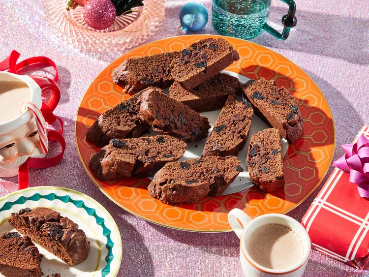

Biscotti de doble chocolate con cerezas

DESCRIPCION
¡Estos biscotti de doble chocolate son todo menos comunes! Inspirados en la
decadente tarta Selva Negra, estas galletas horneadas dos veces son
crujientes y están repletas de ricos trozos de chocolate y estallidos
de dulces cerezas confitadas.
INGREDIENTES
- 1/2 taza de azucar granulada.
- 1/2 taza de mantequilla salada, ablandada (1 barra).
- 3 huevos grandes.
- 1 cucharadita de estracto de vainilla.
- 1 3/4 tazas de harina para todo uso.
- 1/2 taza de cacao en polvo sin azúcar.
- 2 cucharaditas de polvo para hornear.
- 1/2 taza de trozos de chocolate negro.
- 1/2 taza de cerezas confitadas , cortadas por la mitad.
PASOS
- Precaliente el horno a 375 grados F (190 grados C). Cubra una bandeja para
hornear con borde alto con papel pergamino..
- Combine la mantequilla ablandada y el azúcar en un tazón grande y bata con una
batidora eléctrica hasta obtener una mezcla cremosa. Agregue los huevos y el
extracto de vainilla y bata hasta que estén bien combinados..
- Añade la harina común, el cacao sin azúcar y el polvo para hornear; mezcla hasta
que se integren. Incorpora los trozos de chocolate y las cerezas confitadas con
la mano (la masa quedará espesa)..
- Divida la masa por la mitad y forme rollos rectangulares de aproximadamente
20 x 5 x 2,5 cm. Colóquelos en la bandeja para hornear preparada.
- En un tazón pequeño, bata el huevo y el agua y pincele las partes superiores
de los troncos con el huevo batido.
- Hornee en el horno precalentado durante 20 minutos.
- Retirar del horno y dejar enfriar durante 30 minutos.
- Corte los troncos en rodajas de 1 pulgada en diagonal con un cuchillo de sierra.
Coloque las rodajas de lado en la bandeja para hornear.
- Hornee durante 10 minutos a 375 grados F (190 grados C), voltee y hornee durante
10 minutos más.
- Dejar enfriar completamente y guardar los biscotti en un recipiente hermético.